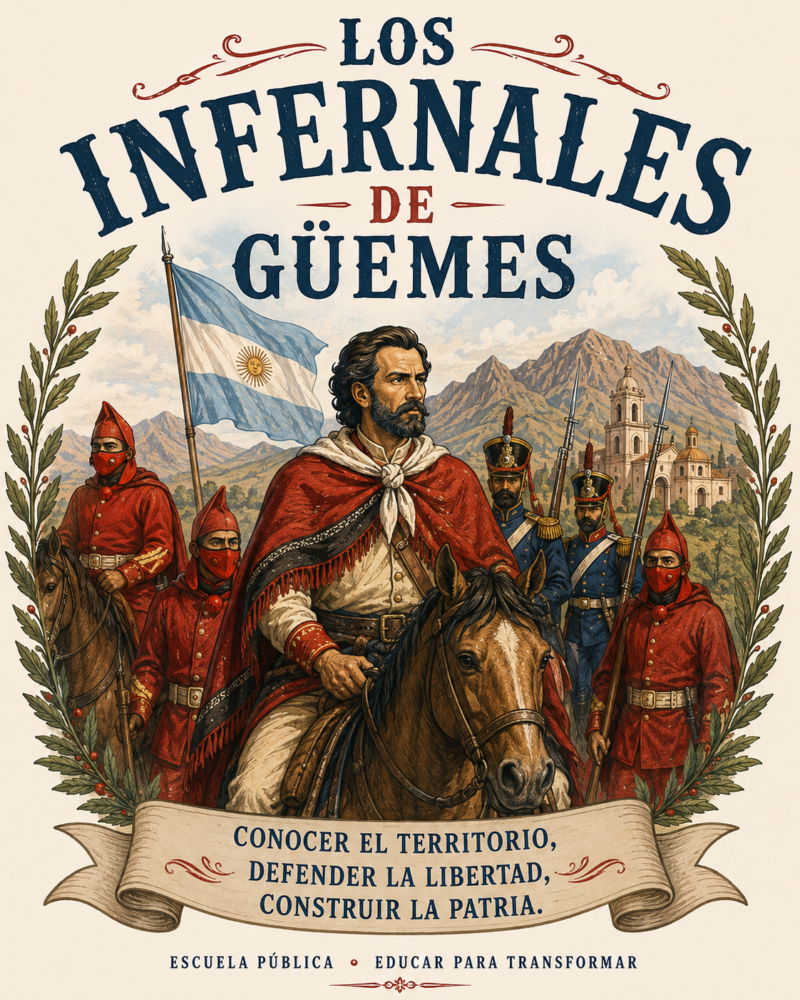

Conocimiento del territorio
Su profundo conocimiento del territorio del norte argentino fue fundamental para sus estrategias de movilidad, observación y defensa del espacio.
Un nombre con historia, identidad y territorio.
Una propuesta para construir colectivamente la identidad de nuestra escuela a partir de la historia, el territorio, la participación y la educación.
Conocé la propuesta ↓
Elegir un nombre para una escuela también es elegir qué historia queremos representar y qué valores queremos transmitir.
Proponemos “Infernales de Güemes” porque recupera una experiencia histórica vinculada con la defensa del territorio, el trabajo colectivo, la soberanía, la identidad y la participación. La propuesta busca resignificar esa historia desde una escuela pública del presente.
Los Infernales fueron las milicias organizadas en torno a Martín Miguel de Güemes durante las luchas por la independencia. Su conocimiento del territorio, su movilidad y su participación resultaron fundamentales para resistir los avances realistas en el norte.
Su profundo conocimiento del territorio del norte argentino fue fundamental para sus estrategias de movilidad, observación y defensa del espacio.
La organización y la cooperación permitieron enfrentar desafíos y sostener una estrategia de defensa territorial.
La Geografía enseña que el territorio no es solamente un espacio físico. Es el lugar donde las personas viven, trabajan, construyen identidad y toman decisiones.
Montañas, quebradas, caminos, valles y zonas rurales no fueron simplemente el escenario de los acontecimientos: formaron parte de las estrategias de movilidad, comunicación y resistencia.
Hoy, nuestra escuela busca formar estudiantes que conozcan su barrio, su ciudad, su provincia y su país para participar de manera responsable en la construcción del futuro.
El nombre propuesto reúne valores que pueden orientar la vida institucional y el vínculo de la escuela con su comunidad.
Conocer el territorio para comprender la realidad.
Trabajar en equipo y construir colectivamente.
Defender el bien común y valorar nuestra historia.
Conocer, valorar y transformar nuestra realidad.
Reconocer nuestras raíces y construir pertenencia.
Ser protagonistas de nuestra comunidad.
Esta representación visual recupera los ponchos rojos de los Infernales, la presencia de Güemes, la bandera argentina, el paisaje del norte y la diversidad de actores vinculados a la independencia, evitando una estética centrada en la violencia.
Propuesta gráfica para acompañar la campaña por el nombre de la Escuela de Educación Secundaria N.º 70.
Una selección de materiales audiovisuales para conocer distintas aproximaciones a la figura de Güemes, sus gauchos y la guerra de independencia.
Porque representa valores que siguen siendo fundamentales para la educación:
Conocer el territorio para comprender la realidad.
Defender el bien común y la soberanía.
Trabajar en equipo y con solidaridad.
Valorar la historia y la identidad nacional.
Participar activamente en la comunidad.
Una educación que forma ciudadanos capaces de conocer, valorar y transformar su realidad.
Informate sobre la propuesta.
Conversá con tu familia.
Compartila con tus compañeros.
Participá de la votación.
¡Sumate a la propuesta!
Participar de la votación